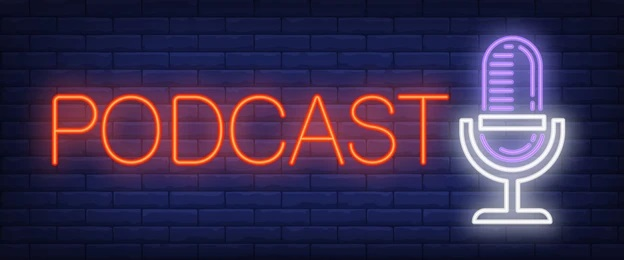

Welcome, to the home page of let’s talk podcasts. We’re glad you’re here.
For those who don’t know a podcast, generally speaking, is like a radio show. You will have one or more individuals who host this show, and they can be any length. Anywhere from a 60 second news snippet to a 3 hour in -depth interview. Some of them tell you a story, similar to the way you might have come to expect as you sat listening to the radio back before television in say 1922. If you don't know what sort of radio shows were around in the 1920's, feel free to ask your facorite search engine. One possible site that talks a little bit about it can be found at the Hancock Historical Museum. Hancock Historical Museum. Here at let’s talk podcasts our goal is to talk about a few of the Podcasts that are out there. With there being over 2 million to choose from, and a majority of them are updated on a regular basis, all vying for your time, we understand that it can be hard trying to determine which one(s) you want to listen to. We do feel it is important to note that all podcasts are completely free to listen to. In some cases, while you can listen to the newest editions for free, previous editions of the show may cost you a small fee. How do you listen to a podcast? Well that is of course up to you. There are plenty of options to choose from, for example if you have a smart speaker those will all find them. You can hunt down their website, and there may be an option to listen from there using your browser. There are also numerous apps out there that allow for this. Both on your phone and your home computer both. The most popular options currently are Spotify, & Itunes, but there are many more to choose from you just need to look. Also some programs, like Spotify do offer mutiple plans or tiers of access. Some free, and others cost you a nominal fee each month. We here at Let's Talk Podcasts encourage you to do a little bit of research and decide which program and option is right for you. We are not paid by or affiliated with any podcast, that way we can offer our genuine un-biased opinion on some podcasts. Our job isn't to tell you to go listen to any particular podcast, we leave that up to you to decide. Instead we go out & listen to some of these Podcasts, and tell you our opinion of things. Are you a new mother? A new dad? Are you interested in Football? How about Food? How about soft drinks? Just in case you were wondering, yes there are podcasts about all those topics as well, and plenty more. Do you happen to have a favorite podcast? Do you just have some tips & or suggestions for us in general? If so, we want to hear from you. Click on the contact us link, and let us know about it. We just might feature it, here on our website. |  |